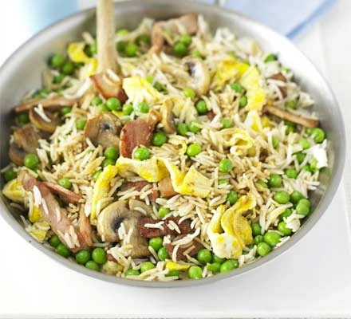

QUICK FRIED RICE

Quick Fried Rice Prepared In 12 Minutes
WHAT IS QUICK FRIED RICE??
Fried rice is a traditional Chinese preparation of cooked rice, vegetables, protein, soy sauce, and aromatics. The ingredients are stir-fried in a large pan or wok for even flavor distribution.
Our egg-fried rice recipe with peas, bacon and mushrooms is a great way to use leftovers. Ready in under 15 minutes, it makes a super-speedy one-pan supper
INGREDIENTS
- 2 tsp oil
- 1 egg, beaten
- 2 rashers bacon, chopped
- 175g mushrooms, sliced
- 200g frozen peas
- 1 garlic clove, crushed
- small knob of ginger, grated
- 2 tsp dark soy sauce, plus extra to serve
- 1 tsp sugar
- 250g cooked basmati rice
STEPS:
- Step 1
- Heat the oil in a frying pan, then tip in the egg. Leave to set for 30 secs-1 min, swirling every now and again, then tip it out and finely slice. Add the bacon and mushrooms to pan, then fry until golden, about 3 mins. Add the peas, garlic and ginger, then cook for 1 min.
- Step 2
- Mix the soy sauce and sugar together. Turn up the heat, add the cooked rice to the pan, heat through, then splash in the sweet soy sauce. Stir through the egg and serve straight away, with more soy sauce if you like.
Check Out More Recipes Here
Check Out The Recipe For The Sweet Ghanaian Jollof
Want A Tasty Desert? Check out the Recipe for Instant Berry Yoghurt Here